OVERVIEW
-
프로젝트 소개
자사몰 기반 이커머스 앱 리뉴얼 프로젝트로, 신제품 출시를 계기로 구매 이후 서비스 부재로 인한 경험 단절과 구조적 비효율을 개선하고자 진행되었습니다. A/S·주문취소·환불 등 구매 이후 서비스를 앱 내에서 직접 처리할 수 있도록 구조를 기획하고 통합하였으며, 주문 상태와 멤버십 전환 및 탐색 구조를 중심으로 사용자 흐름을 재설계한 프로젝트입니다.
-
참여인원
UI/UX 디자이너 1명(본인)
개발자 2명 -
역할
기획 및 UI/UX 디자인 전담
-
기간
2024년 2월 ~ 3월(약 6주) : 앱 전체 리디자인
2024년 6월(약 3주) : 구매 이후 서비스 기획 및 디자인 -
사용 툴(tool)
Figma, Adobe Photoshop, Illustrator
PROJECT BACKGROUND
신제품 출시를 계기로, 앱 전반에서 브랜드 디자인을 강화하고 사용성을 개선할 필요성이 제기되었습니다. 그러나 기존 앱은 구매 이후 단계까지 고려한 사용자 경험이 충분히 설계되어 있지 않았으며, 특히 구매 이후 서비스(A/S, 주문 취소, 환불)를 앱 내에서 직접 처리할 수 있는 기능이 부재한 상태였습니다.
이로 인해 고객은 구매 이후 발생하는 문제를 유선 또는 이메일을 통해 별도로 문의해야 했고, 구매 경험은 앱 외부 채널로 분절되는 구조를 갖고 있었습니다. 동시에 UI 디자인의 일관성이 부족해 서비스 전반의 직관성과 사용성 역시 개선이 필요한 상황이었습니다.
이러한 배경 속에서, 구매 이후 경험을 앱 내에서 일관되게 제공하고 내부 운영 효율을 함께 개선할 수 있는 구조적 개편의 필요성이 명확해졌습니다.
PROBLEM DEFINITION
-
Business Problems
- 구매 이후 서비스가 수작업 중심으로 운영되어 고객지원팀의 업무 효율이 낮음
- 구매 이후 서비스 관련 문의가 앱 외부 채널에 집중되어 관리 및 추적이 어려움
- 내부 운영 프로세스와 사용자 경험이 분리되어 있음
-
User Problems
- 앱 내부에 A/S, 주문 취소, 환불 등 구매 이후 서비스를 직접 처리하거나 안내받을 수 있는 경로가 존재하지 않음
- 멤버십 가입을 유도하는 시각적 강조와 안내가 부족하여, 할인 혜택을 놓친 상태에서 구매하는 사례 발생
- UI 조작 방식이 직관적이지 않아 제품 탐색 과정에서 불필요한 탐색 비용이 발생함
- 화면별 UI 디자인의 통일성이 부족해 기능 사용 방식이 일관되지 않으며, 이로 인해 전반적인 직관성과 조작감이 저하됨
PROJECT GOALS
구매 이후 서비스 경험을 앱 내로 통합하고, 서비스 전반의 사용성과 일관성을 개선함으로써 사용자 만족도와 내부 운영 효율을 동시에 향상시키는 것을 목표로 하였습니다.
-
Business Goals
- 구매 이후 서비스(A/S, 주문 취소, 환불)를 앱 내로 통합하여, 고객지원팀의 기존 업무 부담을 완화하는 것을 목표로 한 서비스 구조를 설계
-
User Goals
- 구매 이후 서비스에 대한 명확한 진입 경로 제공
- 멤버십 가입 혜택과 가입 필요성을 명확히 안내하여 가입 행동을 유도하는 경험 설계
- 제품 탐색 과정의 불필요한 탐색 비용 감소
- UI 디자인의 일관성 개선을 통한 직관적인 사용 경험 제공
RESEARCH
구매 이후 서비스 경험의 문제를 보다 명확히 정의하기 위해 내부 고객 문의 데이터를 분석하고, 관련 VOC를 유형별로 분류하여 패턴을 도출하였습니다.
-
내부 데이터 분석
고객지원팀의 내부 문의 데이터를 분석한 결과, 전체 고객 문의 중 약 34%가 구매 이후 서비스(A/S, 주문 취소, 환불)와 관련된 문의로 나타났습니다. 구매 이후 서비스 관련 문의가 전체 문의에서 가장 높은 비중을 차지하고 있어, 해당 영역이 사용자 경험과 내부 운영 모두에 주요한 영향을 미치고 있음을 확인하였습니다.
고객지원 문의 분포 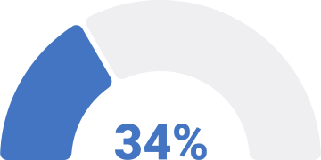
- 구매 이후 서비스 관련
- 그 외
-
VOC(Voice of Customer) 유형 분류
구매 이후 서비스 관련 문의를 유형별로 분류한 결과, 문의는 주로 다음과 같은 패턴으로 반복되었습니다.
-
1. 앱 내 구매 이후 서비스 기능 및 처리 구조 부재
- 주문 취소, 환불, A/S를 앱 내부에서 직접 처리할 수 있는 기능 미제공
- 서비스 요청을 위해 전화·이메일 등 외부 채널 이용 필요
- 앱 내에서 구매 이후 서비스가 하나의 흐름으로 설계되어 있지 않음
-
2. 서비스 진행 상태 가시성 부족
- 접수 이후 처리 단계 확인 불가
- 완료 여부를 확인하기 위해 반복 문의 발생
- 서비스 진행 상황에 대한 사용자 통제감 부족
-
-
대표 사용자 발화
정량 데이터와 VOC 유형 분류를 보완하기 위해, 구매 이후 서비스와 관련된 대표적인 사용자 발화를 함께 검토하였습니다.
- “환불을 하고 싶은데 앱 안에서는 방법을 찾을 수 없어서 결국 고객센터에 전화했어요.”
- “A/S를 접수했는데 지금 처리 중인지 완료된 건지 확인할 수가 없어서 계속 문의하게 됩니다.”
해당 발화들은 구매 이후 서비스에 대한 접근 경로 부재와 진행 상태 가시성 부족이 실제 사용자 경험에서 반복적으로 문제로 인식되고 있음을 보여줍니다.
-
리서치 요약
내부 데이터 분석과 VOC 분류 결과, 구매 이후 서비스는 사용자 경험 측면뿐 아니라 내부 운영 측면에서도 개선 우선순위가 높은 영역임을 확인할 수 있었습니다. 이를 바탕으로 구매 이후 서비스를 앱 내에서 명확하고 일관되게 제공하는 방향으로 UX 및 서비스 구조를 재설계하고자 하였습니다.
UX STRATEGY
구매 이후 서비스의 구조적 공백과 전환 흐름의 비효율을 해결하기 위해, 서비스 구조와 전환 구조의 두 축을 중심으로 재설계하였습니다.
-
1. 서비스 구조 체계화
앱 내에서 구매 이후 서비스가 제공되지 않아 경험이 외부 채널로 분절되던 문제를 해결하기 위해, 주문 취소, 환불, A/S를 앱 내에서 직접 처리할 수 있는 구조로 통합하고 주문 흐름 기준의 상태 체계를 재정의하여 서비스 요청부터 완료까지 하나의 흐름으로 연결되는 구조를 설계하였습니다.
-
2. 전환 촉진 구조 정립
멤버십 노출 부족과 비효율적인 탐색 구조로 인해 행동 전환과 사용 효율이 저하되던 문제를 개선하기 위해, 구매 여정 전반에 멤버십 진입 경로를 확장하고 카테고리 및 탐색 구조를 재정비하여 전환 유도와 탐색 효율을 동시에 강화하였습니다.
DESIGN PROCESS
-
1. 서비스 구조 체계화
-
1-1. 정보 구조 재정립
구매 및 주문 맥락 중심으로 IA를 재구성하여 분산된 기능을 통합하였습니다. 외부 채널 및 타인 구매 제품까지 A/S 접수가 가능한 서비스 특성을 반영하여, A/S 신청 기능을 특정 주문에 종속되지 않는 독립 구조로 재설계하였습니다. 또한 구매 이후 서비스의 진입 맥락을 고객센터 중심에서 주문 기반 경험으로 전환하여 서비스 책임 흐름을 재정의하였습니다.
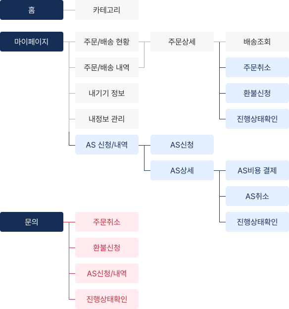
- 기존 제공 기능
- 신규 정의 서비스
- 외부 채널 제공 서비스 (내부 이관)
-
1-2. 상태 관리 체계 고도화
주문 운영 흐름을 기준으로 상태 단계를 재정의하고 사용자에게 전달되는 상태 정보 구조를 정리하였습니다.
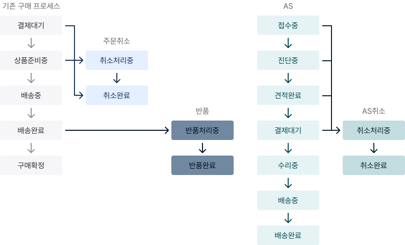
-
1-3. 주문 상세 구조 재편
주문 상태 인지와 상태 기반 행동이 우선적으로 이루어지도록 주문 상세 정보 구조와 레이아웃을 재구성하였습니다.
주문상세 정보위계 설계 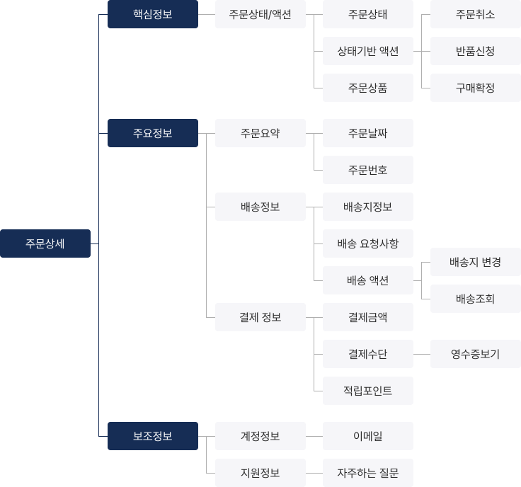
-
-
2. 전환 촉진 구조 정립
-
2-1. 멤버십 가입 진입 구조 재설계
구매 여정 전반에 가입 경로를 확장하고, 시각적 노출을 강화하여 전환 가능성을 높였습니다.
홈 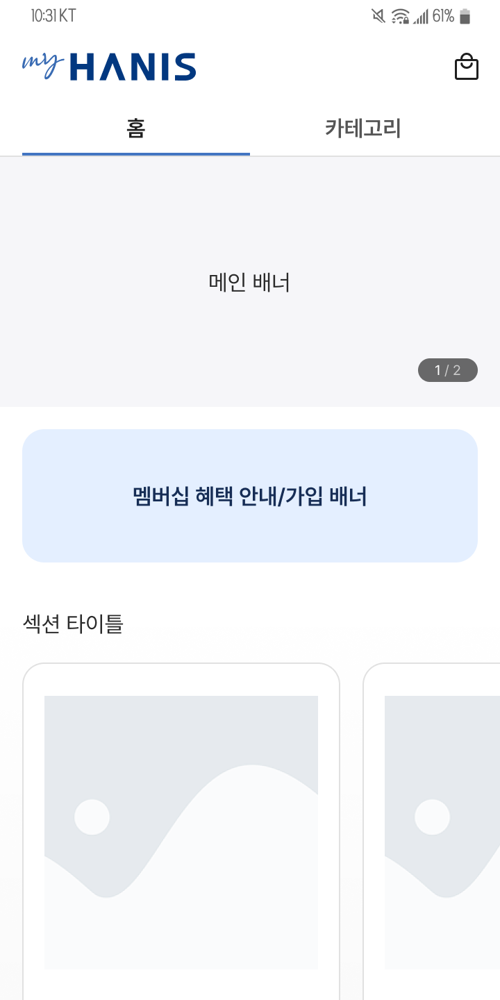
마이페이지 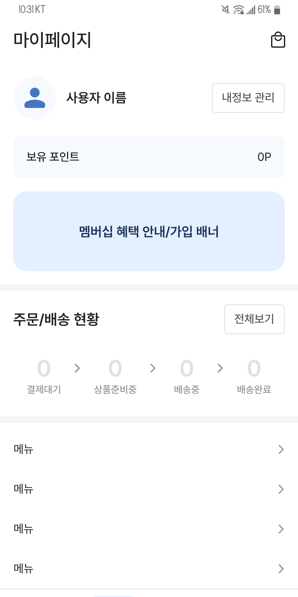
제품상세 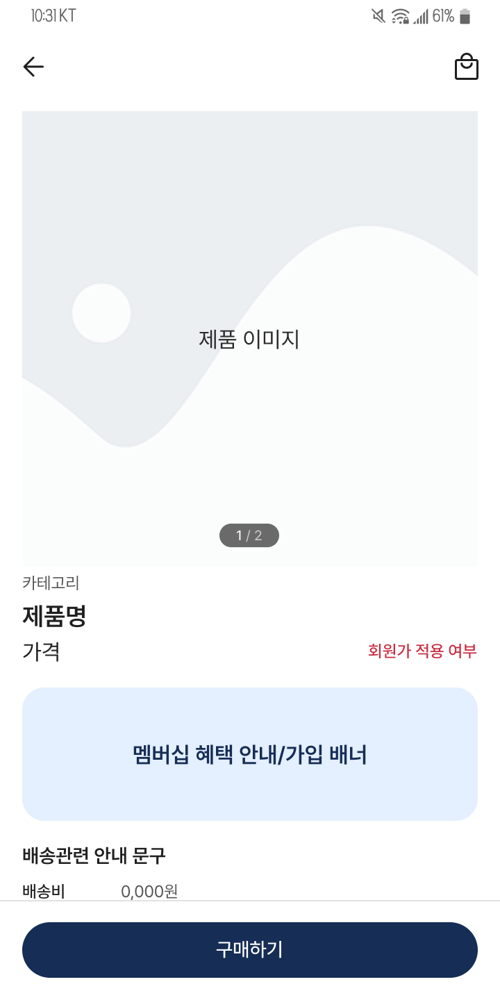
제품상세 - 알림 Modal 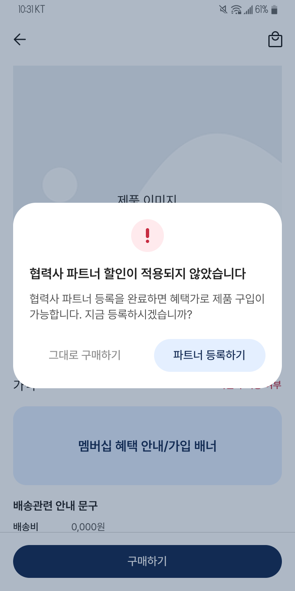
-
2-2. 탐색 체계 최적화
카테고리 및 필터 구조를 재정비하여 탐색 비용을 낮추고 정보 접근성을 개선하였습니다.
- 탐색 전용 진입 구조 마련 : 홈 화면에서 카테고리를 별도 탭으로 분리하여 제품 탐색에 집중할 수 있는 전용 화면을 구성하였습니다.
- 카테고리 노출 우선순위 재정렬 : 판매율이 높은 제품 카테고리를 기준으로 필터 순서를 재배치하고, 첫 번째 필터부터 노출되도록 설계하여 주요 카테고리에 보다 빠르게 접근할 수 있도록 하였습니다.
- 단일 카테고리 탐색 구조 적용 : 기존의 다중 선택(on/off) 방식 대신 한 번에 하나의 카테고리만 표시되는 구조로 변경하여 한 화면에 노출되는 정보량을 줄이고 탐색 흐름을 보다 간결하게 설계하였습니다.
Before After -
2-3. UI 시스템 일관성 정립
앱 전반의 UI 컴포넌트 스타일과 사용 규칙을 정리하고, 컴포넌트 기반의 디자인 시스템을 구축하여 화면 간 시각적 일관성과 조작 경험의 통일성을 확보하였습니다.
Typography - Typeface : “Pretendard”
- Headline (Semi Bold) - 28 px
- Title (Semi Bold) - 22 / 18 px
- Label (Medium) - 16 / 14 / 12 px
- Body (Regular) - 14 / 12 / 10 px
Color Roles 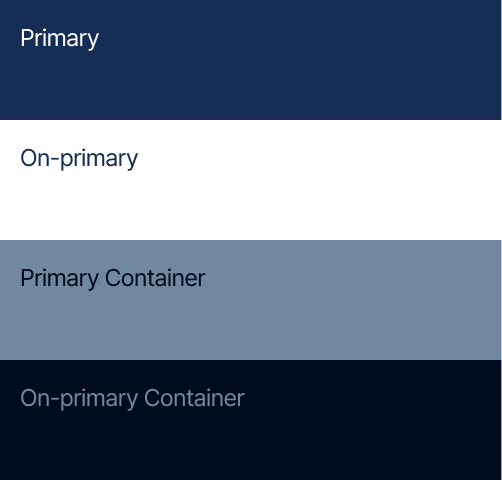
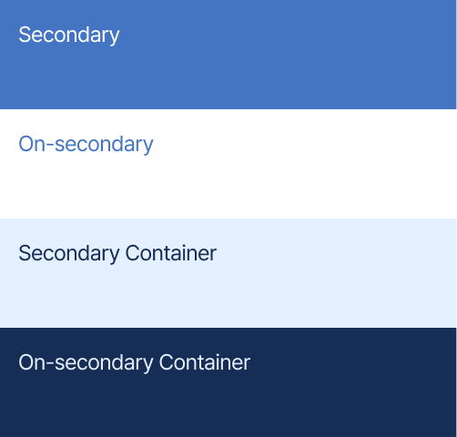
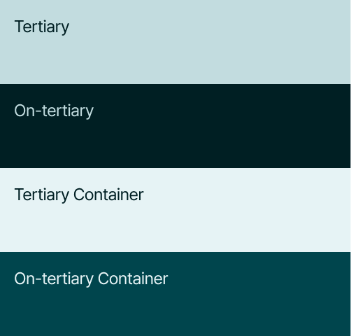
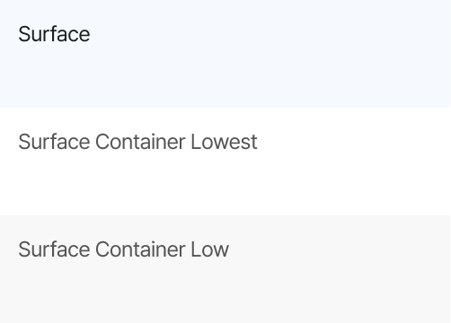
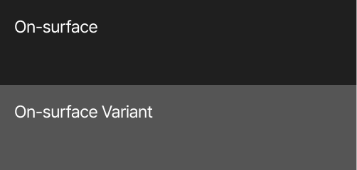
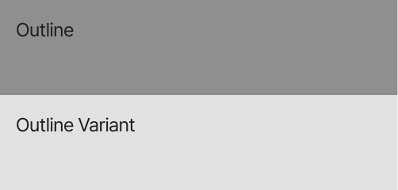
Buttons 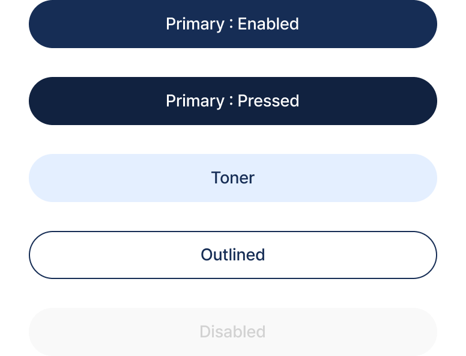
Text Fields 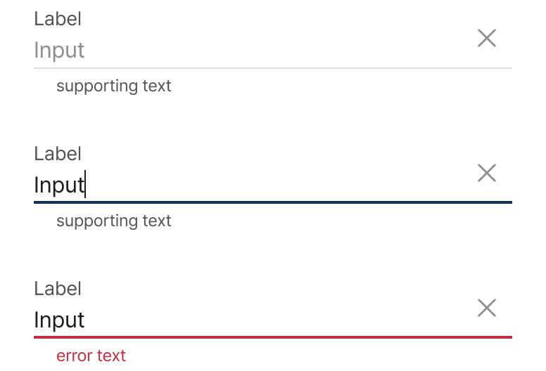
-
FINAL DESIGN
* 실제 서비스 화면을 기반으로 하되, 가격 등 일부 정보는 비식별화하여 구성하였습니다.
-
홈/카테고리
앱 진입 시 멤버십 혜택을 인지하지 못한 채 바로 상품 탐색으로 이동하던 흐름을 개선하기 위해, 전 탭 상단에 멤버십 배너를 강조 배치하여 초기 진입 시점에서 혜택 인지와 가입으로 이어지는 전환 흐름을 구성했습니다. 또한 카테고리를 별도 탭으로 분리해 탐색 구조를 분리함으로써, 홈 영역은 신규·인기 상품 중심의 큐레이션 기반 탐색 흐름으로 재편했습니다.
Before 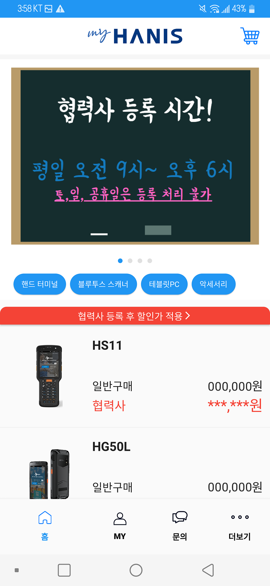
After -
제품상세
가격 확인 이후 멤버십 할인 적용 여부를 인지하지 못한 채 구매로 이어지던 문제를 개선하기 위해, 가격 정보와 멤버십 할인가 적용 여부, 가입 유도 요소를 인접 배치하여 가격 인지 시점에 혜택 인지가 동시에 이루어지도록 설계했습니다. 비멤버십 사용자가 구매를 시도할 경우 추가 안내를 통해 할인 누락을 방지하는 재고려 단계를 구성했으며, 옵션 선택 바텀시트에서는 필수 옵션과 추가 옵션을 구분해 정보 밀도를 조절하고 선택 흐름의 명확도를 높였습니다.
Before 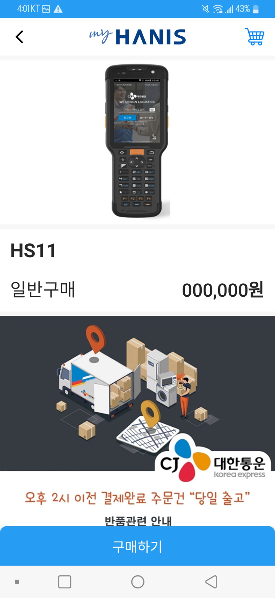
After 옵션선택 바텀시트 Before 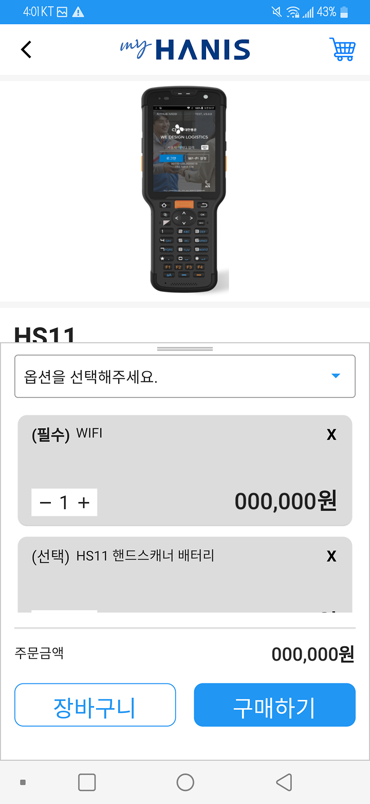
옵션선택 바텀시트 After 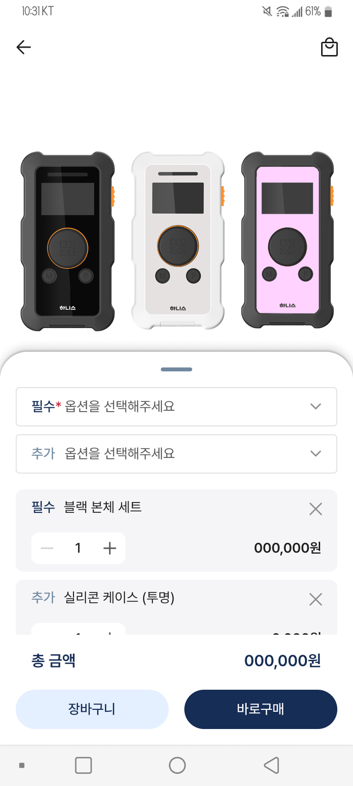
-
마이페이지
분산된 정보 구조로 인해 주문 상태 확인과 기타 정보 탐색이 혼재되던 문제를 해결하기 위해, 개인정보, 주문/배송 현황, 기타 메뉴를 기능과 맥락 기준으로 분리하고 순차적으로 재배치하여 탐색 흐름을 정리했습니다. 또한 주문/배송 영역에서는 진행 중인 단계를 강조하고 비진행 단계의 시각적 비중을 낮춰 상태 가시성을 높임으로써, 현재 상태 인지와 확인 행동이 자연스럽게 이어지도록 설계했습니다.
Before 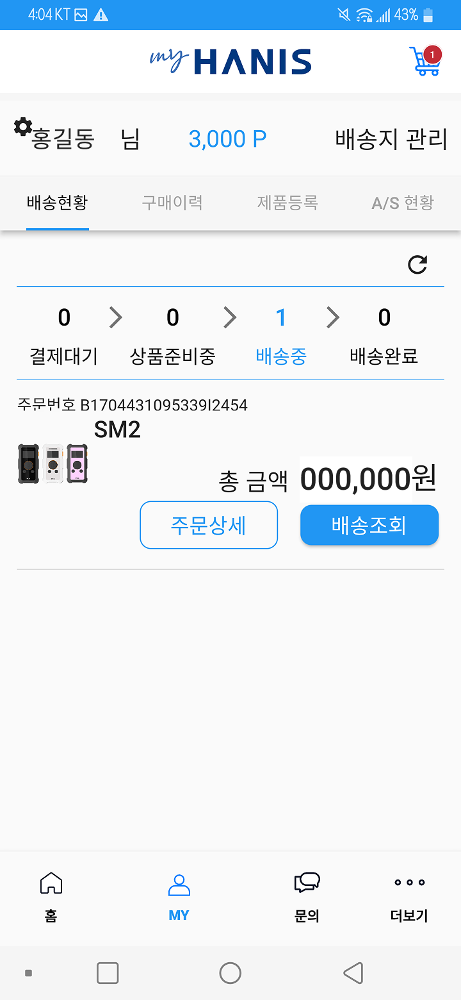
After 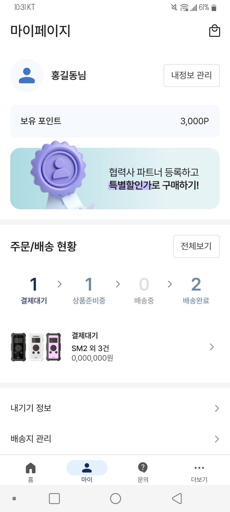
-
주문상세
주문 이후 진행 상태를 확인하기 어렵고, 이로 인해 외부 문의가 반복되던 문제를 개선하기 위해, 주문 진행 상태를 상단 핵심 정보로 집중 배치하고 단계별 주요 액션을 인접 구성하여 상태 인지와 다음 행동이 즉시 연결되는 구조로 재설계했습니다. 하단에는 자주 묻는 질문 영역을 추가하여 주문 및 배송 관련 정보를 사전에 제공함으로써, 외부 문의로 이어지던 흐름을 앱 내에서 해소할 수 있도록 했습니다.
Before 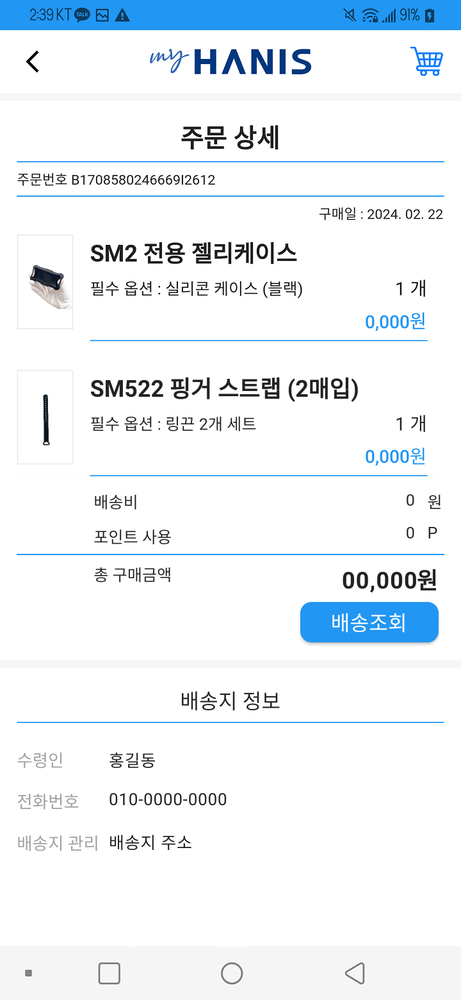
After -
AS 신청/내역
앱 내에 A/S 신청 경로가 부재해 서비스 요청이 외부 채널로 분산되던 문제를 해결하기 위해, A/S 신청 기능을 앱 내에서 완결되는 구조로 새롭게 설계했습니다. 특히 기존 구매 흐름과 유사한 인터랙션 패턴을 적용하여 별도의 학습 없이도 서비스 요청이 자연스럽게 이루어지도록 구성했으며, 기기 선택 시 직접 입력이 아닌 등록된 제품 선택 방식을 도입해 입력 부담을 줄이고 요청 과정을 단축했습니다.
AS신청 AS내역/상세
REFLECTIONS & NEXT STEPS
사용성 검증과 정량적 성과 측정 없이 구조 설계 중심으로 프로젝트가 마무리되면서, 핵심 설계가 실제 사용자 행동과 전환에 어떤 영향을 미치는지 확인하지 못한 한계가 있었습니다.
향후에는 주요 사용자 흐름에 대한 사용성 테스트와 함께 멤버십 가입 전환율, 구매 전환율, 구매 이후 서비스 이용률 등의 지표를 기반으로 설계를 검증하고, 초기 단계부터 데이터 수집 구조와 측정 기준을 함께 정의하여 지속적인 개선이 가능한 운영 기반을 구축할 필요가 있습니다.